Os presentamos a los Líderes de La Liga Monotype Táctica!
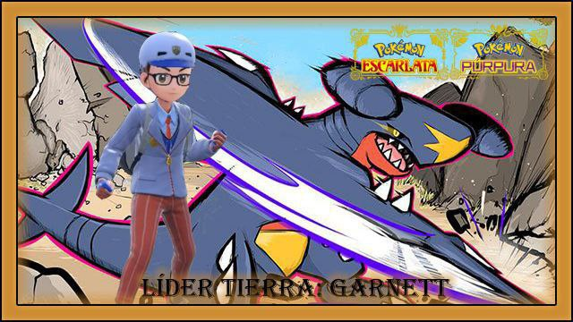La fuerza de sus terremotos derriba todo a su pasoGarnett - @KGarnett21: Tierra - Individual 6vs6 - Lleva todos los Pokémon de su tipo y cualquiera puede hacer teracristalización a cualquier tipo 🌍 -
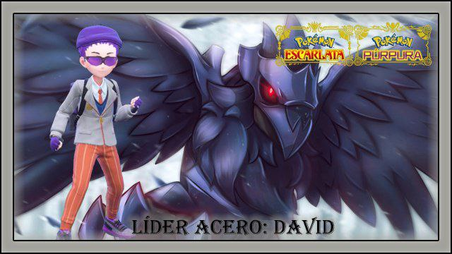Asegúrate de traer antídotos o su veneno recorrerá todas tus venasLíder Veneno David - @teampro1994: Veneno - Individual 6vs6 - Lleva todos los Pokémon de su tipo y cualquiera puede hacer teracristalización a cualquier tipo ☠️ - Inactivo -
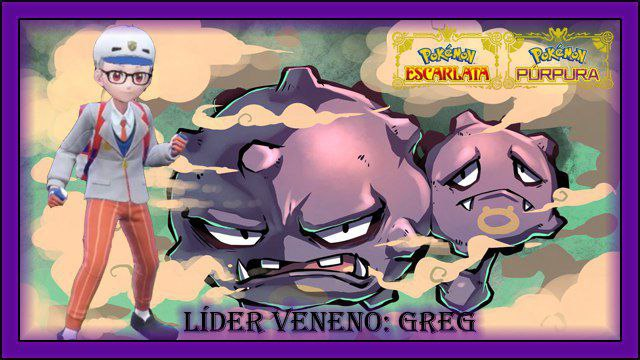Las Hadas, son fantasía, como tus esperanzas de vencer en mi combate.Gregsillo - @Gregsillo: Hada - Individual 6vs6 - Lleva todos los Pokémon de su tipo y cualquiera puede hacer teracristalización a cualquier tipo 🧚🏻♂️ -
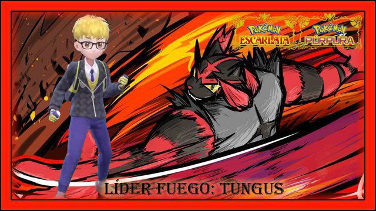Cuidado con sus descargas eléctricas, no vayas a salir chamuscadoTungus - @Agus4013: Eléctrico - Individual 6vs6 - Lleva todos los Pokémon de su tipo y cualquiera puede hacer teracristalización a cualquier tipo ⚡️ -
Esté lider temporalmente pasará a ser suplente de Alto Mando hasta nuevo aviso
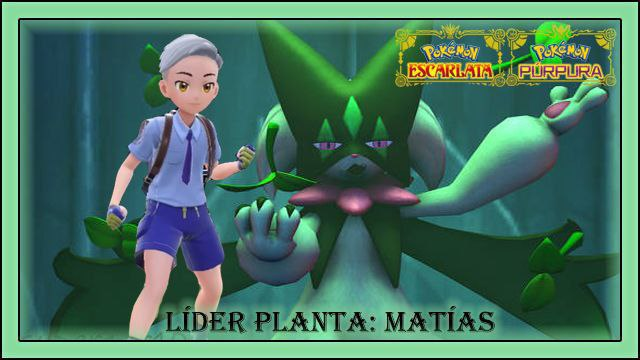Siente el verdadero poder de la naturalezaMatias - @Matiasykommoo: Planta - Doble 4vs4 (VGC) - Lleva todos los Pokémon de su tipo y cualquiera puede hacer teracristalización a cualquier tipo 🍀 -
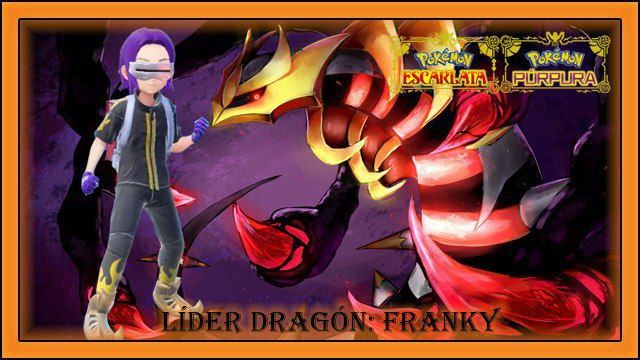Aquellos que quieran apagar mi llama final... Les dará un golpe de calor.FRANKY(SHADOWGIRATINA&GHETSIS) - @FrankyMovieBosses: Fuego - Doble 4vs4 (VGC) - Lleva todos los Pokémon de su tipo y cualquiera puede hacer teracristalización a cualquier tipo 🌋 -
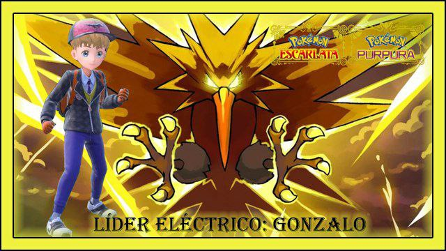Tus predicciones no serán suficientes para superar mi mente privilegiada!Gonzalo - @gonzalobardales: Psiquico - Individual 6vs6 - Lleva todos los Pokémon de su tipo y cualquiera puede hacer teracristalización a cualquier tipo 👁️ -
Antiguo campeón de la liga
-
Prepárate para una batalla contra el más duro aceroDP Vista - @RubenSteel - Acero - Individual 6vs6 - Lleva todos los Pokémon de su tipo y cualquiera puede hacer teracristalización a cualquier tipo ⚙️ -
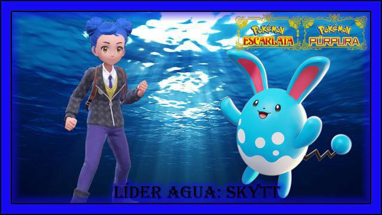Ponte a salvo antes de que llegue el tsunamiSkytt.✨ - @PatriSanchezJ: Agua - Doble 4vs4 (VGC) - Lleva todos los Pokémon de su tipo y cualquiera puede hacer teracristalización a cualquier tipo💧 -
¿Serás capaz de ver a estos fantasmas antes de que sea tarde?Dev. - @eldevjaja: Fantasma - Doble 4vs4 (VGC) - Lleva todos los Pokémon de su tipo y cualquiera puede hacer teracristalización a cualquier tipo ✝️ -
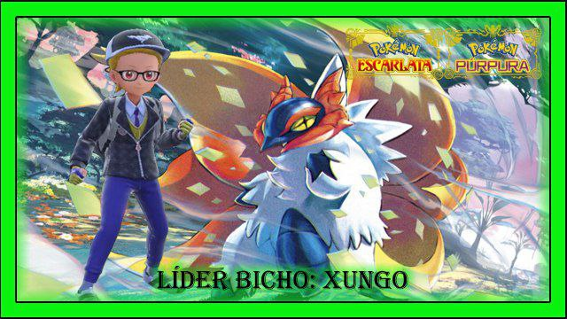Cuidado con sus telarañas, podrías no volver nuncaIker El Xungo - @Spidalf: Bicho - Individual 6vs6 - Lleva todos los Pokémon de su tipo y cualquiera puede hacer teracristalización a cualquier tipo 🐛 -
Antiguo campeón de la liga
-
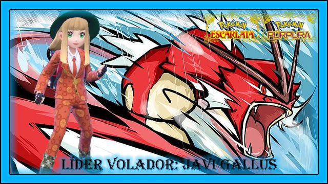¿Quieres volar más alto que mis Pokémon? ¡Pues más alta será tu caída!Javi Gallius - @JaviC1892: Volador - Doble 4vs4 (VGC) - Lleva todos los Pokémon de su tipo y cualquiera puede hacer teracristalización a cualquier tipo 🦅 -
Antiguo campeón de la liga
-
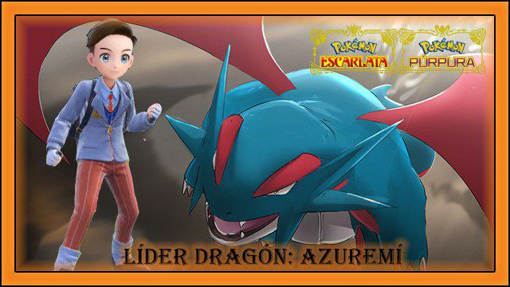Ni un cuento de hada te salvará del tipo más fuerte.Azuremí - @Azuremi14: Dragón - Individual 6vs6 - Lleva todos los Pokémon de su tipo y cualquiera puede hacer teracristalización a cualquier tipo 🎭 -
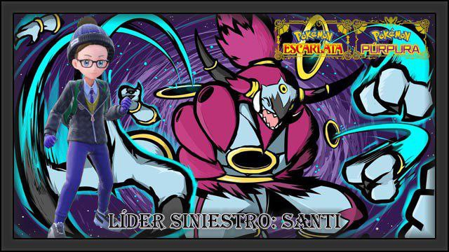No importa que tan duro sea ¡LEVANTA!
Un campeón es el que se pone en pie cuando no puede más.Santi - @xPeluko: Lucha - Individual 6vs6 - Lleva todos los Pokémon de su tipo y cualquiera puede hacer teracristalización a cualquier tipo 🥊 -
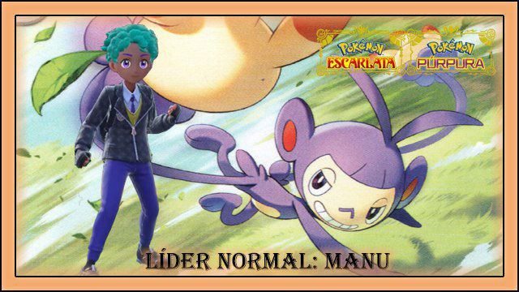Todo lo del mundo sensible es normal, no como los fantasmasmanu - @manufraanco: Normal - Individual 6vs6 - Lleva todos los Pokémon de su tipo y cualquiera puede hacer teracristalización a cualquier tipo ♠️ -
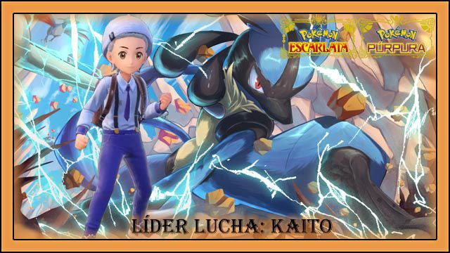¿Crees estar listo para enfrentar a tus peores pesadillas? Demuéstralo en el campo de batalla.Kaito Kid - @byKaitoKid: Siniestro - Individual 6vs6 - Lleva todos los Pokémon de su tipo y cualquiera puede hacer teracristalización a cualquier tipo ⛩️ -
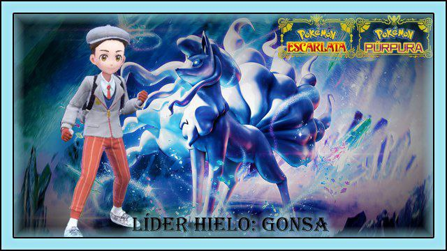La brisa de Niflheim congelará a tus PokémonGonsa - @Gonsa98: Hielo - Doble 4vs4 (VGC) - Lleva todos los Pokémon de su tipo y cualquiera puede hacer teracristalización a cualquier tipo ❄️ -
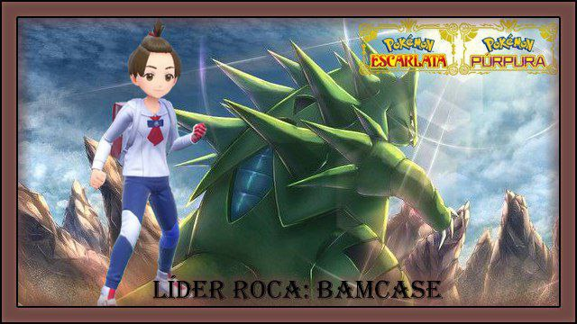Íñigo Grimal - @Bamcase: Roca - Individual 6vs6 - Lleva todos los Pokémon de su tipo y cualquiera puede hacer teracristalización a cualquier tipo 🧗♂️ -
- :Reserva de Individual 6vs6 - Este líder podrá sustituir hasta a dos líderes en el recorrido de un aspirante, si estos no pueden disputar el combate 🏅
- :Reserva de Doble 4vs4 (VGC) - Este líder podrá sustituir un líder en el recorrido de un aspirante, si este no puede disputar el combate 🏅
 Prepárate para una batalla contra el más duro aceroDP Vista - @RubenSteel - Acero - Individual 6vs6 - Lleva todos los Pokémon de su tipo y cualquiera puede hacer teracristalización a cualquier tipo ⚙️
Prepárate para una batalla contra el más duro aceroDP Vista - @RubenSteel - Acero - Individual 6vs6 - Lleva todos los Pokémon de su tipo y cualquiera puede hacer teracristalización a cualquier tipo ⚙️ ¿Serás capaz de ver a estos fantasmas antes de que sea tarde?Dev. - @eldevjaja: Fantasma - Doble 4vs4 (VGC) - Lleva todos los Pokémon de su tipo y cualquiera puede hacer teracristalización a cualquier tipo ✝️
¿Serás capaz de ver a estos fantasmas antes de que sea tarde?Dev. - @eldevjaja: Fantasma - Doble 4vs4 (VGC) - Lleva todos los Pokémon de su tipo y cualquiera puede hacer teracristalización a cualquier tipo ✝️